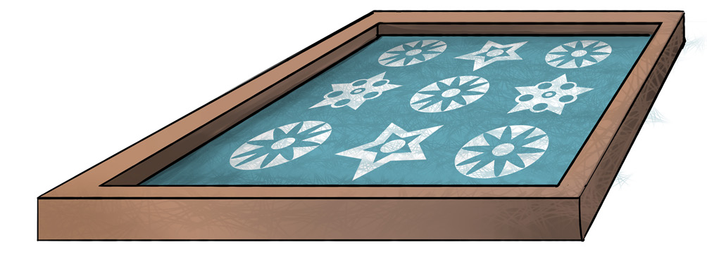

Tools used in screen printing process
Screen printing requires a specific set of tools and materials to create the stencils and apply ink onto the printing surface. Here are the key tools and materials used in the screen-printing process:
Screen: The screen is the most essential tool in screen printing. It is typically made of a frame and a tightly stretched mesh. The choice of mesh material (e.g., polyester, nylon) depends on the printing application and the type of ink.
Squeegee: A squeegee is a handheld tool with a rubber or polyurethane blade that is used to push ink through the open areas of the screen and onto the printing surface.
Printing press: A screen printing press holds the screen firmly in place and allows precise and consistent printing. There are various types of presses, including manual and automatic.
Exposure unit: An exposure unit is used to expose the screen to UV light after the design has been applied to the emulsion. This hardens the emulsion in the areas not blocked by the design, and as a result, the stencil is created.
Washout booth or sink: After exposure, the screen needs to be washed to remove the unhardened emulsion. A washout booth or sink equipped with water and possibly a pressure washer is used for this purpose.
Drying racks: Drying racks are used to store and dry freshly printed materials without smudging the ink.